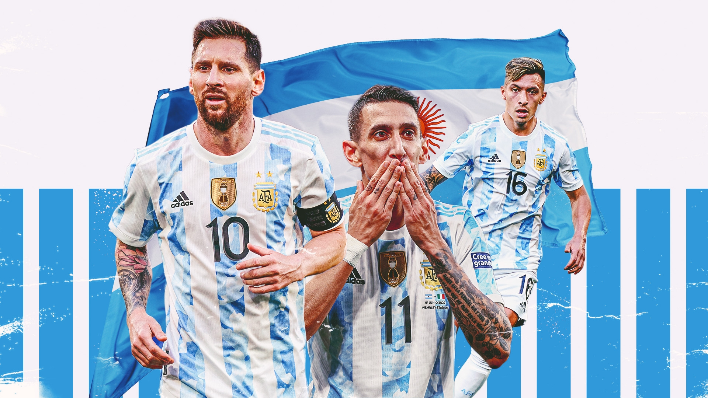

Meilleur joueur
LIONEL MESSI
L'Argentine a toutes les raisons d'espérer remporter sa troisième Coupe du Monde.
L'équipe d'Argentine de football est la sélection de joueurs argentins représentant le pays lors des compétitions internationales de football masculin, sous l'égide de l'Asociación del Fútbol Argentino.
Les Argentins retrouveront la Coupe du Monde animés par une forte soif de revanche après leur triste parcours à Russie 2018. La douloureuse défaite face à la Croatie en phase de groupes les a contraints à disputer un huitième de finale à haute tension contre la France, future championne du monde, qui s'est soldé par leur élimination 4-3. Leur histoire récente est marquée par d'amères désillusions, dont une finale qui leur a échappé en prolongation et un quart de finale perdu aux tirs au but.
Mais l'Albiceleste de Messi ne compte pas jeter l'éponge. Lors de sa cinquième et peut-être dernière participation, Leo tentera de s'inspirer de Diego Armando Maradona, dont les exploits face à l'Angleterre à Mexique 1986 sont restés gravés dans la mémoire nationale. Cette année-là, l'Argentine a remporté sa deuxième Coupe du Monde, après avoir conquis la première devant son public en 1978.
LIONEL MESSI
Lionel Messi, parfois surnommé Leo Messi, né le 24 juin 1987 à Rosario en Argentine, est un footballeur international argentin évoluant au poste d'attaquant au Paris Saint-Germain. Montpellier HSC.
Seul joueur septuple Ballon d'or et sextuple Soulier d'or, Messi est considéré comme l'un des meilleurs joueurs de football toutes générations confondues. Joueur le plus décisif du xxie siècle, meilleur buteur sous un seul maillot en club, il est élu meilleur ailier droit de tous les temps par France Football tandis que l'IFFHS le désigne meilleur joueur de la décennie de 2011 à 2020.
"L'Argentine en une seule mot, iconique »

« l'argentine va être le champion du monde.»
« Argentina and Messi fans where are you show love here, we must sleep happy»
«Le fait que les Argentins marquent au bout de dix minutes a peut-être joué en notre faveur. Ils ont pu croire que ce serait assez facile face à une équipe présentée comme la plus faible du groupe. Et quelque part, ce n’est pas anormal. Nous, quand on affronte des équipes supposées moins fortes, il peut y avoir un excès de confiance. Alors, oui, il y a des choses qui ont été intéressantes en première période : on joue bien le hors-jeu, les joueurs sont disciplinés, volontaires, mais dans l’ensemble, je n’étais pas satisfait, notamment du pressing de mes attaquants sur la défense argentine
“Looks like Argentina is afraid of us”